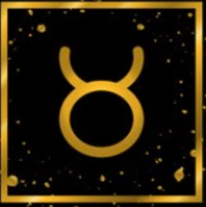
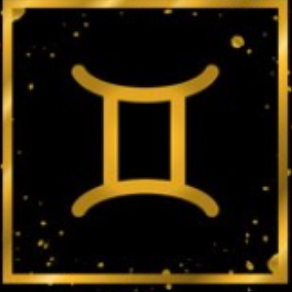

Capricorn
Capricorn Dates: December 22 - January 19
Description
Capricorns are the hardest workers of the zodiac and love nothing more than getting ahead in life. They are ambitious, determined, materialistic and strong.

Lucky element:
- Lucky number: 0,5,9
- Lucky color: Orange
- Lucky day: Saturday
- Lucky stone: Garnet
Match Zodiac

Tarurus

Virgo

Gemini
Strength
Capricorns have a practical outlook on life, work on the ground, strong willpower, not easily affected, cautious everywhere, perseverance to overcome difficulties, adherence to principles, emphasis on discipline, family values, humility to others, and a unique sense of humor , Conservative, cautious, practical, responsible, reliable, witty, independent, respectful of authority, value oneself, cautious, ambitious, patient, and disciplined.
Weakness
Capricorns are too realistic, stubborn, not optimistic enough, personal egoism, lack of romantic interest, too suppressed their desires, too focused on personal goals, lack of care and enthusiasm for the crowd, not good at communication, unable to adapt to changes, pessimistic, and kind Change, indifferent and serious in appearance, not easy to approach, clingy, stingy.